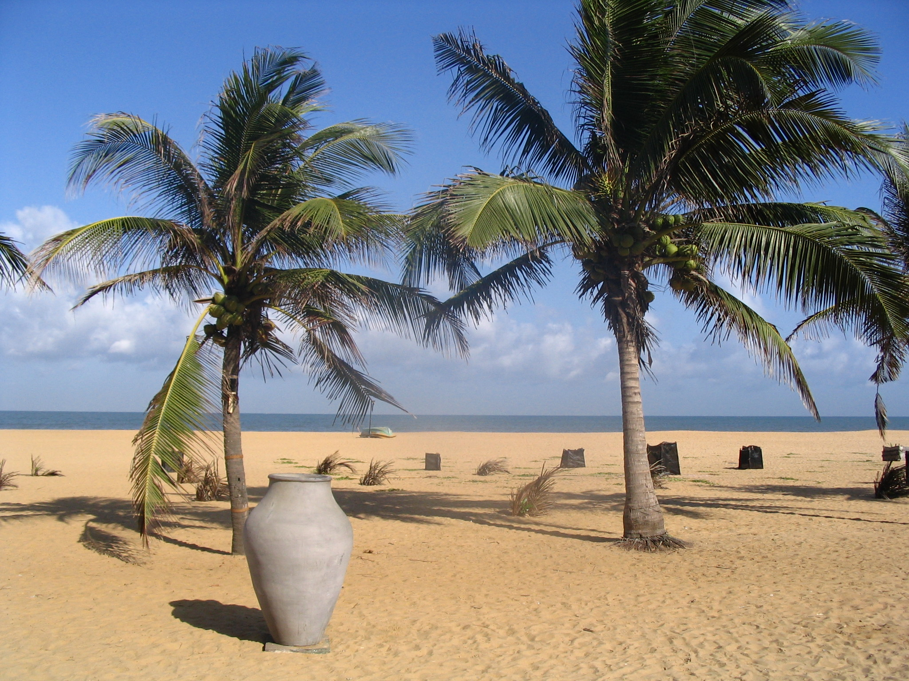
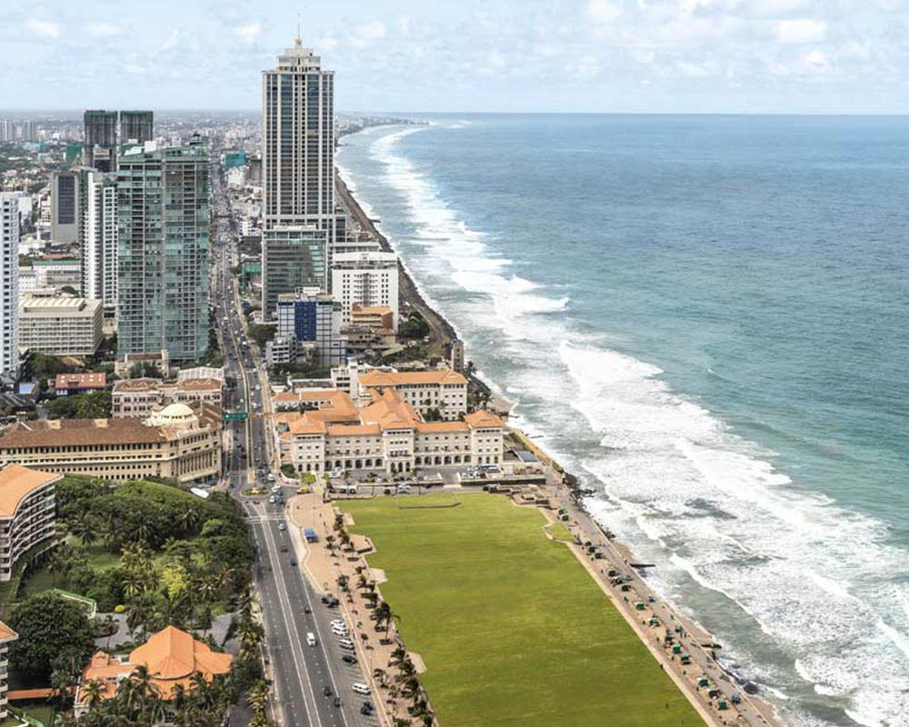
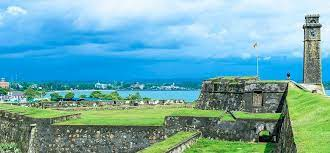
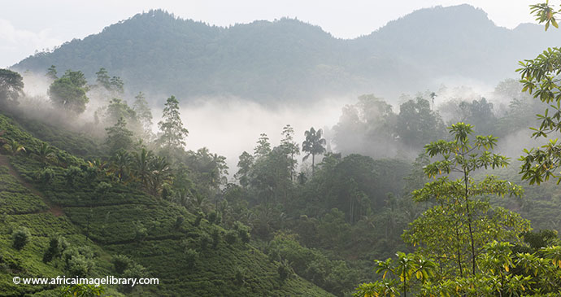
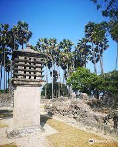
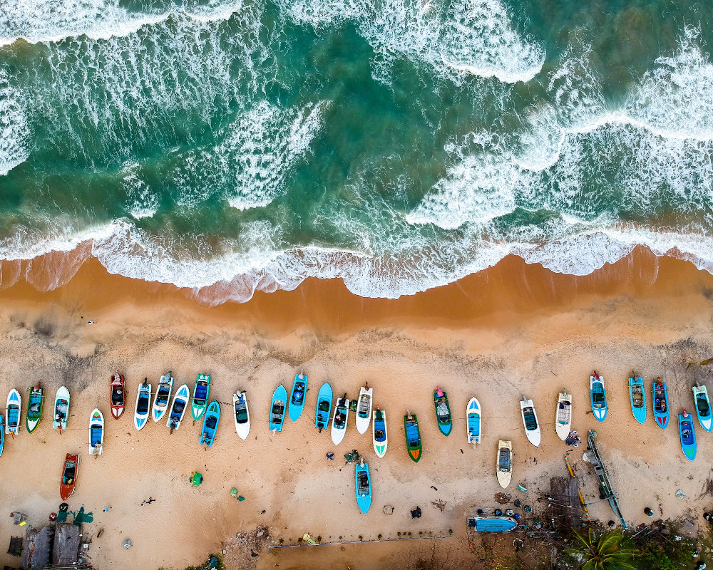

Tourist Attraction Places in Sri Lanka
Here is a list of the best places to visit in Sri Lanka for first time visitors as your trip becomes a life changing experience.
- Central Province
- Dambulla Royal Cave Temple and Golden

- Temple of the Sacred Tooth Relic

- Kandy Lake

- Lake Gregory

- Hakgala Botanical Gardens

- Western Province
- Negombo Beach

- National Museum of Colombo

- Gangaramaya Temple

- Galle Face Green

- Viharamahadevi Park

- Southern Province
- Galle Dutch Fort

- Mirissa Beach

- Unawatuna Beach

- Sinharaja Forest Reserve

- Ridiyagama Safari Park

- Uva Province
- Nine Arches Bridge

- Rawana Falls

- Diyaluma Falls

- Lipton's Seat

- Adisham Bungalow

- Sabaragamuwa Province
- Sri Pada / Adam's Peak

- Great World's End Drop

- Bopath Falls

- Udawalawe National Park

- Pinnawala Elephant Orphanage

- North Western Province
- Ridi viharaya

- Sri Munneswaram Kovil

- Yapahuwa Rock Fortress

- Anawilundawa Bird Sanctuary

- Athugala Rock

- North Central Province
- Minneriya National Park

- Ruwanweli Maha Seya

- Sri Maha Bodhi

- Isurumuniya Rajamaha Viharaya
- Polonnaruwa Gal Viharaya

- Northern Province
- Fort Jaffna

- Nallur Kandaswamy Kovil

- Chundikulam National Park

- National Shrine of Our Lady of Madu

- Neduntheevu

- Eastern Province
- Arugam Bay Beach

- Nilaveli Beach

- Sri Thirukoneswaram Kovil

- Pasikuda Beach

- Fort Frederick